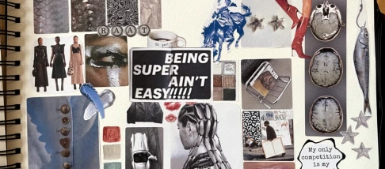
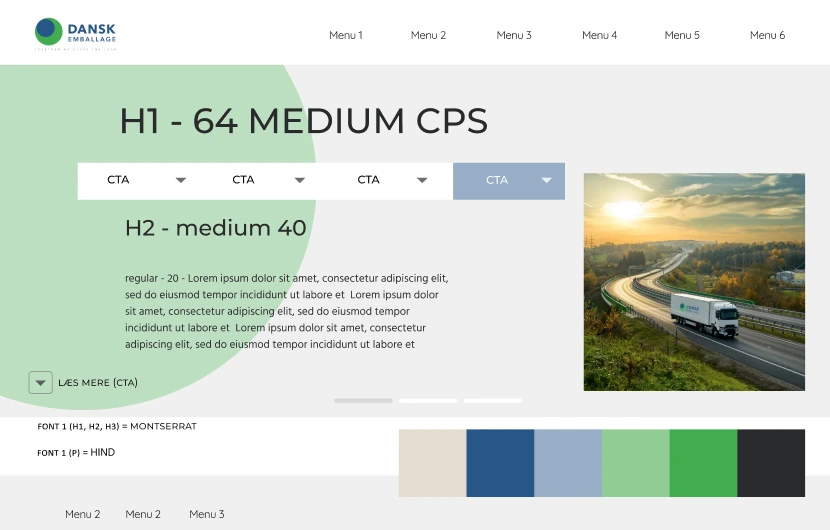
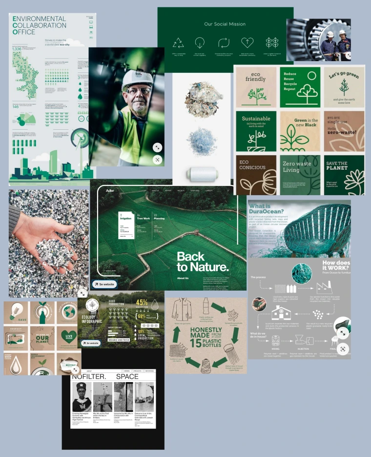
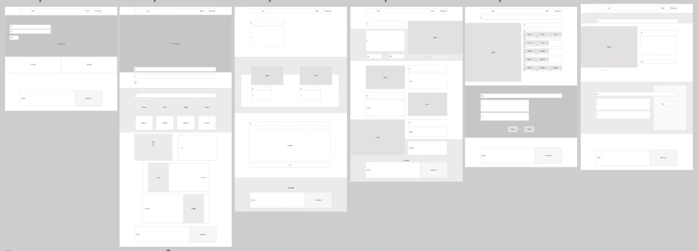
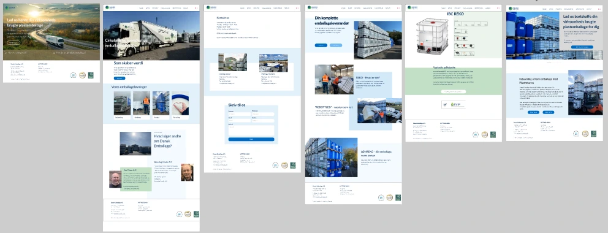

05 Grundlæggende indhold
I tema 05 fik vi en grundlæggende forståelse for indholdsproduktion, som inkluderede faserne præproduktion, produktion og postproduktion. Vi arbejdede med Lottiefiles, som er animeret vektorgrafik, og lærte at implementere det i vores projekter. Temaet introducerede os også for samarbejde i gruppeprojekter og brugen af SCRUM og Trello som projektstyringsværktøjer. Opgaven bestod i at udvikle to websites: et passionssite med en video og en virksomhedsside, hvor vi skulle redesigne en eksisterende hjemmeside.
Passionssite
I denne del af temaet skulle vi finde en person med en passion, som vi kunne interviewe og filme. Min gruppe valgte at kontakte en veninde, der designer sine egne smykker og studerer smykkedesign på KEA. Vi blev tildelt et wireframe til både mobil- og desktopversionen af websitet. Websitet skulle indeholde et portrætfoto samt fire stillbilleder taget fra forskellige vinkler. I Figma lavede jeg også et styletile for websitet for at definere designet og den visuelle retning.
Video og lottiefile
I forbindelse med projektet optog vi videoen med en Iphone 13 og en Osmo pocket 2. Udover interviewet filmede vi også b-rolls, som understøttede både stemningen og de emner, personen talte om, hvilket bidrog til et naturligt flow i videoen. Under forløbet lærte vi forskellige kamerateknikker, interviewmetoder og redigering i Premiere Pro. Derudover blev vi introduceret til at skabe og implementere Lottiefiles, som vi skulle integrere i vores hero-sektion. Jeg valgte at lave en Lottiefile, der viser Emilies skitsebog, hvor jeg udvalgte specifikke elementer, som bliver forstørret og får mere opmærksomhed i sektionen for at skabe et visuelt fokus.

Virksomhedssite
I denne del af temaet arbejdede vi i grupper, og vi valgte at anvende min fars virksomhed som case. Vi indledte med en grundig research, hvor vi benyttede to metoder: desktop research og interview. Interviewet med virksomheden gav os et værdifuldt indblik i virksomhedens kerneværdier og deres mål for websitet. Dette gjorde det muligt for os at forstå, hvad de ønskede at opnå, og hvordan vi bedst kunne formidle dette på deres nye website.
Ideudvikling
I vores ideudvikling lavede vi et sitemap for at få et klart overblik over strukturen på websitet og sikre, at navigationen var logisk og intuitiv. Derudover lavede vi et moodboard, der afspejlede den stemning, vi ønskede at formidle på websitet. Gennem arbejdet med moodboardet blev vi enige om de farver og skrifttyper, som skulle bruges, og som vi implementerede i vores styletiles. Vi lavede flere styletiles for at afprøve forskellige visuelle retninger og designs, og endte med at vælge en stil, der bedst afspejlede vores ønskede æstetik og funktionalitet for websitet.


Wireframe og prototype
Her ses vores wireframe og et lo-fi prototype af virksomheds sitet.
Her kan I se det nuværende site for sammenligning:
https://www.danskemballage.dk/

